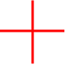
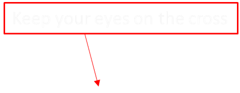

Who Are We? Are "They" Around Us?
---Flashed Face Distortion Effect---
ref: Jason Tangen, Sean Murphy and Matthew Thompson,2012. Second prize of 2012 Best Illusion of The Year Contest


Time interval
sec
face interval
px
Click to Reset
Start